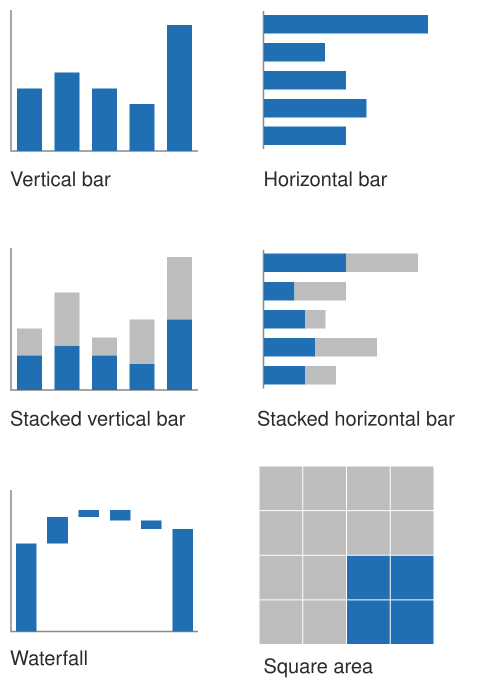
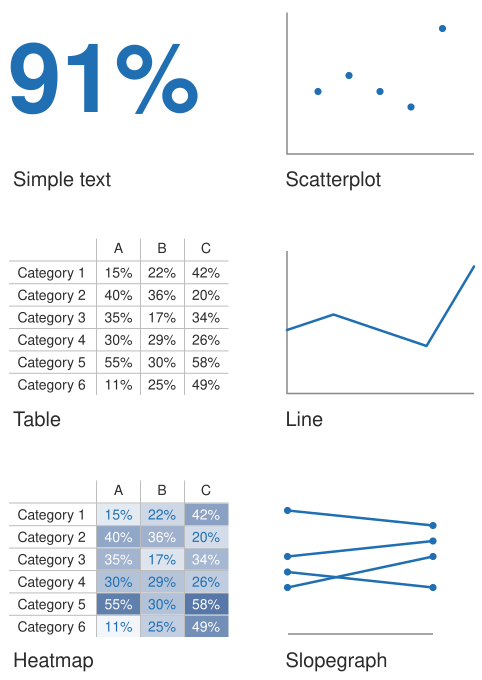
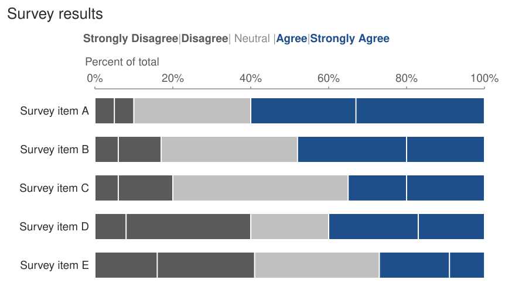
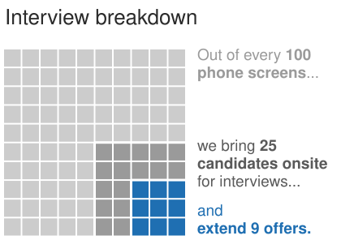
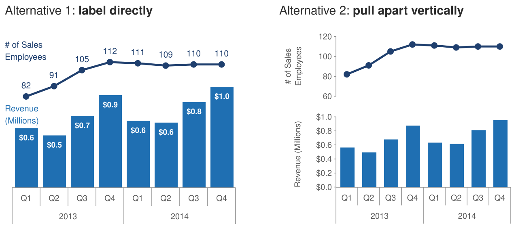
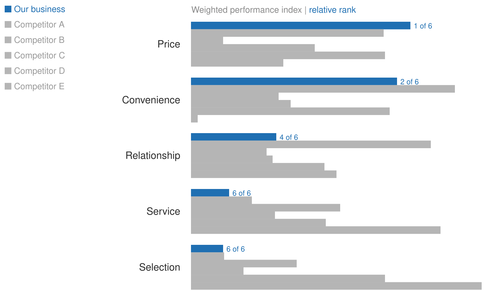
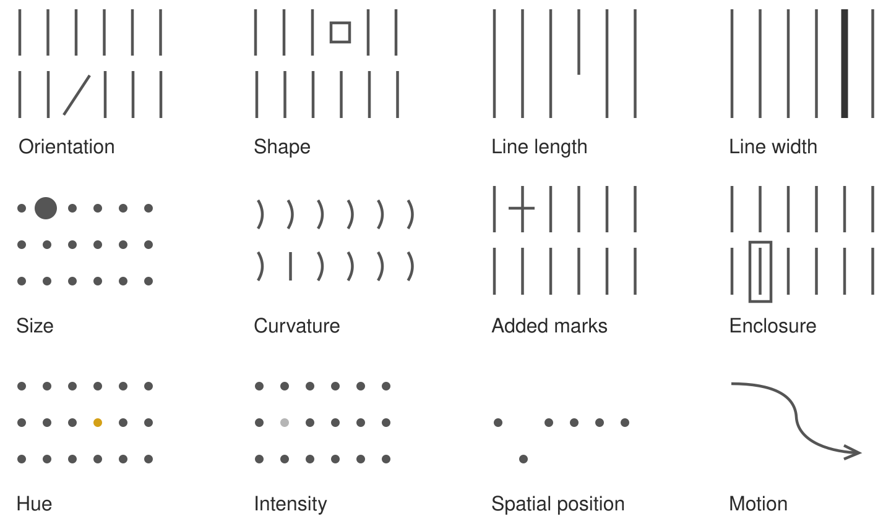
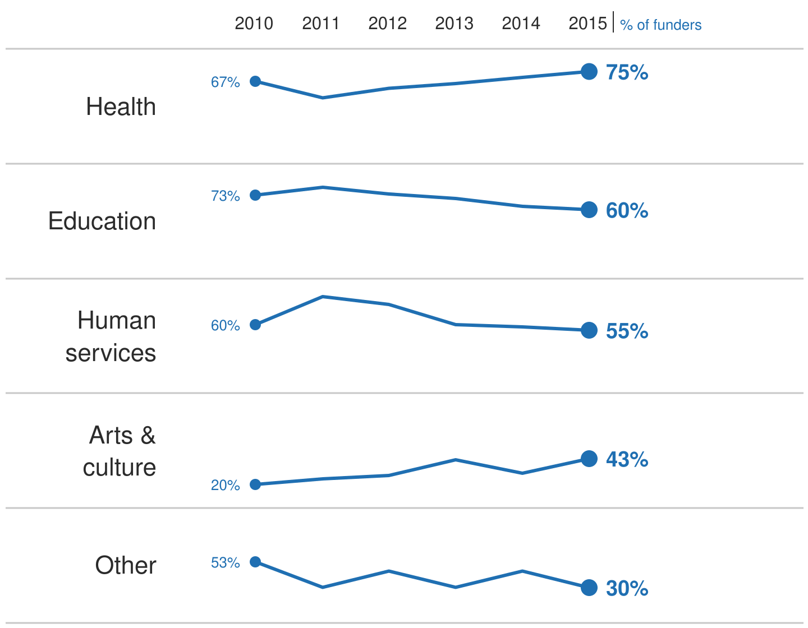
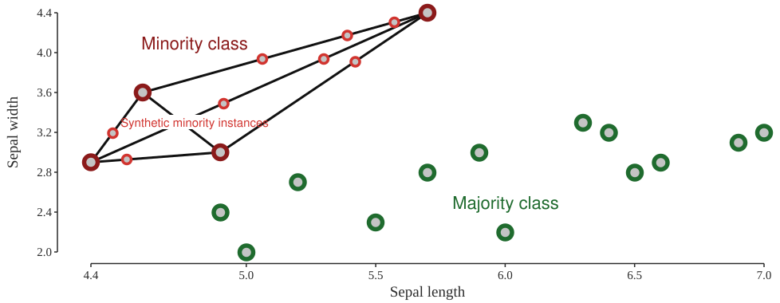

Data science#
Some notes on doing data science - visualization, messy data, feature selection, and reproducibility.
About this chapter
This chapter is the practical side of working with data. It opens with the PQRS frame for an analysis (population, question, representative data, scrutinizing answers), then the advice from the book Storytelling with Data on making plots that make one point clearly, then visual summaries, transformations and smoothers for looking at relationships.
The middle sections are about fixing data before modeling: rebalancing rare classes, imputing missing values (where the missingness mechanism decides what is possible), preprocessing, and three families of feature selection. The chapter ends with tools for reproducible experiments and notes on Breiman, Box and Tukey’s views of what statistics should be.
Chapter outline: 8 sections
- PqrsThe steps of an analysis aimed at inference.
- Visualization1 interactiveThe first five subsections follow the book's steps: understand the context, choose a visual, cut clutter, focus attention, and tell a story.
- Imbalanced data1 figureFixes for a rare class, roughly from simplest to most involved: resample, reweight the loss, synthesize new minority points, remove majority points near the boundary, or change the features or the model.
- Missing-data imputation1 interactiveWhat can be done depends on why values are missing.
- PreprocessingTwo transformations applied before modeling: discretizing features, and whitening, which maps inputs X to decorrelated features Z with \Sigma_Z = I.
- Feature selectionThree families, by how they use the predictor: filters score features with a summary statistic and no model, wrappers search over subsets with the model as a black box, and embedded methods select features while fitting (e.g.
- ReproducibilityTools for rerunning an analysis and getting the same answer: containers for the software environment, data version control for data and models, and trackers for hyperparameters, metrics and workflows.
- PrinciplesNotes on papers and talks about what statistics is for: Breiman's two cultures, Box and Tukey on data analysis as a science, and Kass on how claims get exaggerated.
Pqrs#
The steps of an analysis aimed at inference. The sampling formulas show why the R matters: under simple random sampling the variance of \(\bar X\) is \(\sigma^2/n\), a bit smaller when sampling without replacement.
Goal: inference - conclusion or opinion formed from evidence
PQRS
P - population
Q - question - 2 types
hypothesis driven - does a new drug work
discovery driven - find a drug that works
R - representative data colleciton
simple random sampling = SRS
w/ replacement: \(var(\bar{X}) = \sigma^2 / n\)
w/out replacement: \(var(\bar{X}) = (1 - \frac{n}{N}) \sigma^2 / n\)
S - scrutinizing answers
Visualization#
The first five subsections follow the book’s steps: understand the context, choose a visual, cut clutter, focus attention, and tell a story. The images are examples of the chart types and fixes it recommends.
First 5 parts here are based on the book storytelling with data by cole nussbaumer knaflic
difference between showing data + storytelling with data
Understand the context (1)#
Before drawing anything, decide who the audience is and what they should know or do. Exploratory analysis is for finding things; explanatory analysis shows the one thing found, distilled to a one-sentence Big Idea.
who is your audience? what do you need them to know/do?
exploratory vs explanatory analysis
slides (need little details) vs email (needs lots of detail) - usually need to make both in slideument
should know how much nonsupporting data to show
distill things down into a 3-minute story or a 1-sentence Big Idea
easiest to start things on paper/post-it notes
Choose an effective visual (2)#
Which chart to use. The examples favor simple bars, lines and minimal tables over pie charts, 3D charts and secondary y-axes, and bar charts start at 0.
 |
 |
|---|---|
 |
 |
 |
 |
 |
 |
generally avoid pie/donut charts, 3D charts, 2nd y-axes
tables
best for when people will actually read off numbers
minimalist is best
bar charts should basically always start at 0
horizontal charts typically easy to read
on axes, retain things like dollar signs, percent, etc.
Eliminate clutter (3)#
Every element that doesn’t support the point competes for attention. The gestalt principles say which things a viewer sees as a group; the rest are concrete fixes: titles top-left, no diagonal or centered text, lines labeled directly.
gestalt principles of vision
proximity - close things are grouped
similarity - similar things are grouped
connection - connected things are grouped
enclosure
closure
continuity
generally good to have titles and such at top-left!
diagonal lines / text should be avoided
center-aligned text should be avoided
label lines directly
Focus attention (4)#
visual hierarchy - outlines what is important
Tell a story / think like a designer (5)#
A presentation works like a story: a beginning that poses a problem, a middle that shows what could be, and an end that calls for action. Horizontal logic means the slide titles alone tell that story.
affordances - aspects that make it obvious how something will be used (e.g. a button affords pushing)
“You know you’ve achieved perfection, not when you have nothing more to add, but when you have nothing to take away” (Saint‐Exupery, 1943)
stories have different parts, which include conflict + tension
beginning - introduce a problem / promise
middle - what could be
end - call to action
horizontal logic - people can just read title slides and get out what they need
can either convince ppl through conventional rhetoric or through a story
Visual summaries#
Numerical and visual summaries, then transformations and smoothers for looking at relationships. A kernel smoother replaces each point with a weighted average of the \(y\) values near it, and the bandwidth \(h\) sets how wide “near” is.
numerical summaries
mean vs. median
sd vs. iq range
visual summaries
histogram
kernel density plot - Gaussian kernels
with bandwidth h \(K_h(t) = 1/h K(t/h)\)
plots
box plot / pie-chart
scatter plot / q-q plot
q-q plot = probability plot - easily check normality
plot percentiles of a data set against percentiles of a theoretical distr.
should be straight line if they match
transformations = feature engineering
log/sqrt make long-tail data more centered and more normal
delta-method - sets comparable bw (wrt variance) after log or sqrt transform: \(Var(g(X)) \approx [g'(\mu_X)]^2 Var(X)\) where \(\mu_X = E(X)\)
if assumptions don’t work, sometimes we can transform data so they work
transform x - if residuals generally normal and have constant variance
corrects nonlinearity
transform y - if relationship generally linear, but non-constant error variance
stabilizes variance
if both problems, try y first
Box-Cox: Y’ = \(Y^l \: if \: l \neq 0\), else log(Y)
least squares
inversion of pxp matrix ~O(p^3)
regression effect - things tend to the mean (ex. bball children are shorter)
in high dims, l2 worked best
kernel smoothing + lowess
can find optimal bandwidth
nadaraya-watson kernel smoother - locally weighted scatter plot smoothing
\(g_h(x) = \frac{\sum K_h(x_i - x) y_i}{\sum K_h (x_i - x)}\) where h is bandwidth
loess - multiple predictors / lowess - only 1 predictor
also called local polynomial smoother - locally weighted polynomial
take a window (span) around a point and fit weighted least squares line to that point
replace the point with the prediction of the windowed line
can use local polynomial fits rather than local linear fits
silhouette plots - good clusters members are close to each other and far from other clustersf
popular graphic method for K selection
measure of separation between clusters \(s(i) = \frac{\corange{b(i)} - \cblue{a(i)}}{\max(\cblue{a(i)}, \corange{b(i)})}\)
a(i) - ave dissimilarity of data point i with other points within same cluster
b(i) - lowest average dissimilarity of point i to any other cluster
good values of k maximize the average silhouette score
lack-of-fit test - based on repeated Y values at same X values
Imbalanced data#
Fixes for a rare class, roughly from simplest to most involved: resample, reweight the loss, synthesize new minority points, remove majority points near the boundary, or change the features or the model.
randomly oversample minority class
randomly undersample majority class
weighting classes in the loss function - more efficient, but requires modifying model code
generate synthetic minority class samples
smote (chawla et al. 2002) - interpolate betwen points and their nearest neighbors (for minority class) - some heuristics for picking which points to interpolate

Fig. 19 Figure 1. SMOTE. Each synthetic minority point (red) lies on a segment between a minority point and one of its nearest minority neighbors.#
adasyn (he et al. 2008) - smote, generate more synthetic data for minority examples which are harder to learn (number of samples is proportional to number of nearby samples in a different class)
smrt - generate with vae
selectively removing majority class samples
tomek links (tomek 1976) - selectively remove majority examples until al lminimally distanced nearest-neighbor pairs are of the same class
near-miss (zhang & mani 2003) - select samples from the majority class which are close to the minority class. Example: select samples from the majority class for which the average distance of the N closest samples of a minority class is smallest
edited nearest neighbors (wilson 1972) - “edit” the dataset by removing samples that don’t agree “enough” with their neighborhood
feature selection and extraction
minority class samples can be discarded as noise - removing irrelevant features can reduce this risk
feature selection - select a subset of features and classify in this space
feature extraction - extract new features and classify in this space
ideas
use majority class to find different low dimensions to investigate
in this dim, do density estimation
residuals - iteratively reweight these (like in boosting) to improve performance
incorporate sampling / class-weighting into ensemble method (e.g. treat different trees differently)
ex. undersampling + ensemble learning (e.g. IFME, Becca’s work)
algorithmic classifier modifications
misc papers
enrichment (jegierski & saganowski 2019) - add samples from an external dataset
ref
imblanced-learn package with several methods for dealing with imbalanced data
Learning from class-imbalanced data: Review of methods and applications (haixiang et al. 2017)
sample majority class w/ density (to get best samples)
log-spline - doesn’t scale

Missing-data imputation#
What can be done depends on why values are missing. Under MCAR and MAR the missingness can be modeled from what is observed. Under MNAR it also depends on the unobserved values, and sensitivity analysis checks how much that matters.
Missing value imputation: a review and analysis of the literature (lin & tsai 2019)
Causal Inference: A Missing Data Perspective (ding & li, 2018)
different missingness mechanisms (little & rubin, 1987)
MCAR = missing completely at random - no relationship between the missingness of the data and any values, observed or missing
MAR = missing at random - propensity of missing values depends on observed data, but not the missing data
can easily test for this vs MCAR
MNAR = missing not at random - propensity of missing values depends both on observed and unobserved data
connections to causal: MCAR is much like randomization, MAR like ignorability (although slightly more general), and MNAR like unmeasured unconfounding
imputation problem: propensity of missing values depends on the unobserved values themselves (not ignorable)
simplest approach: drop rows with missing vals
mean/median imputation
probabilistic approach
EM approach, MCMC, GMM, sampling
matrix completion: low-rank, PCA, SVD
nearest-neighbor / matching: hot-deck
(weighted) prediction approaches
linear regr, LDA, naive bayes, regr. trees
can do weighting using something similar to inverse propensities, although less common to check things like covariate balance
multiple imputation: impute multiple times to get better estimates
MICE (passes / imputes data multiple times sequentially)
can perform sensitivity analysis to evaluate the assumption that things are not MNAR
two standard models for nonignorable missing data are the selection models and the pattern-mixture models (Little and Rubin, 2002, Chapter 15)
performance evaluation
acc at finding missing vals
acc in downstream task
applications
Purposeful Variable Selection and Stratification to Impute Missing FAST Data in Trauma Research (fuchs et al. 2014)
Matrix completion#
Filling in the missing entries of a matrix by assuming the full matrix has low rank. Minimizing the rank is NP-hard, so the formulations below relax it: the nuclear norm, a rank constraint on a noisy fit, or a factorization \(UV^T\) that is faster but non-convex.
A Survey on Matrix Completion: Perspective of Signal Processing (li…zhao, 2019)
formulations
Exact matrix completion via convex optimization (candes & recht, 2012)
\(\min _{\boldsymbol{M}} \operatorname{rank}(\boldsymbol{M})\), s.t. \(\left\vert \boldsymbol{M}_{\Omega}-\boldsymbol{X}_{\Omega}\right\vert _F \leq \delta\): - this is NP-hard
nuclear norm approxmiation
\(\min _{\boldsymbol{M}}\vert \boldsymbol{M}\vert _*\)\(, s.t. \)\(\vert \vert \boldsymbol{M}_{\Omega}-\boldsymbol{X}_{\Omega}\vert \vert _F \leq \delta\)
this has be formulated as semidefinite programming, nuclear norm relaxation, or robust PCA
minimum rank approximation helps with the assumption that the data are corrupted by noise (e.g. ADMiRA (lee & bresler, 2010))
\(\min _{\boldsymbol{M}}\left\vert (\boldsymbol{M})_{\Omega}-\boldsymbol{X}_{\Omega}\right\vert _F^2\), s.t. \(\operatorname{rank}(\boldsymbol{M}) \leq r\)
matrix factorization is a faster but non-convex approximation (e.g. LMaFit (wen, yin, & zhang, 2012))
\(\min _{\boldsymbol{U}, \boldsymbol{V}, \boldsymbol{Z}}\left\vert \boldsymbol{U} \boldsymbol{V}^T-\boldsymbol{Z}\right\vert _F^2\)\(, s.t. \)\(\boldsymbol{Z}_{\Omega}=\boldsymbol{X}_{\Omega}\)
\(\ell_p\)-Norm minimization - use a different norm than Frobenius to handle specific types of noise
Adaptive outlier pruning (yan, yang, & osher, 2013) - better handles outliers
algorithms
gradient-based
gradient descent
accelerated proximal descent
bregman iteration
non-gradient
block coordinate descent
ADMM: alterntating direction method of multipliers
Newer approaches
Simple, Fast, and Flexible Framework for Matrix Completion with Infinite Width Neural Networks (radhakrishnan…belkin, uhler, 2022) - use NTK for FCN/CNN to do matrix completion
Graph Convolutional Matrix Completion (van den berg, kipf, & welling, 2017)
Transformer methods for image inpainting (e.g. mask-aware tranfsormer, 2022)
Preprocessing#
Two transformations applied before modeling: discretizing features, and whitening, which maps inputs \(X\) to decorrelated features \(Z\) with \(\Sigma_Z = I\). The choice of whitening matrix \(W\) (PCA, ZCA, Cholesky) decides what else \(Z\) preserves.
often good to discretize/binarize features
e.g. from genomics
whitening
get decorrelated features \(Z\) from inputs \(X\)
\(W=\) whitening matrix, selected based on problem goals:
PCA: Maximal compression of \(\mathbf{X}\) in \(\mathbf{Z}\)
ZCA: Maximal similarity between \(\mathbf{X}\) and \(\mathbf{Z}\)
Cholesky: Inducing structure: \(\operatorname{Cov}(X, Z)\) is lower-triangular with positive diagonal elements
\(W\) is constrained as to enforce \(\Sigma_{Z}=I\)
Feature selection#
Three families, by how they use the predictor: filters score features with a summary statistic and no model, wrappers search over subsets with the model as a black box, and embedded methods select features while fitting (e.g. the lasso).
Filtering - select based on summary statistic#
Filters score features without the final model. Univariate scores are fast but judge each feature alone, and they differ in what they detect: correlation sees only linear dependence, mutual information sees any dependence.
ranks features or feature subsets independently of the predictor
univariate methods (consider one variable at a time)
ex. variance threshold
ex. T-test of y for each variable
ex. correlation screening: pearson correlation coefficient - this can only capture linear dependencies
mutual information - covers all dependencies
ex. chi\(^2\), f anova
multivariate methods
features subset selection
need a scoring function
need a strategy to search the space
sometimes used as preprocessing for other methods
Wrapper - recursively eliminate features#
Wrappers treat the model as a black box and search over feature subsets, scoring each subset on held-out data. Forward selection adds features one at a time, backward elimination removes them.
uses a predictor to assess features of feature subsets
learner is considered a black-box - use train, validate, test set
forward selection - start with nothing and keep adding
backward elimination - start with all and keep removing
others: Beam search - keep k best path at teach step, GSFS, PTA(l,r), floating search - SFS then SBS
Embedding - select from a model#
uses a predictor to build a model with a subset of features that are internally selected
ex. lasso, ridge regression, random forest
Reproducibility#
Tools for rerunning an analysis and getting the same answer: containers for the software environment, data version control for data and models, and trackers for hyperparameters, metrics and workflows.
Containerization#
e.g. docker
Data version control#
DVC works alongside git: small .dvc metafiles in the repository track large data and model files, and git checkout plus dvc checkout bring back an old state. The other tools log parameters, metrics and outputs for each run.
dvc - data version control
.dvc folder keeps track of some internal stuff (like .git)
metafiles ending with .dvc are stored in git, tracking big things like data and models
also simple support for keeping track of metrics, displaying pipeline, making plots
keep track of old things using git checkout and dvc checkout
dagshub - built on dvc, like github (gives ~10GB free storage per project)
“Our recommendation is to separate distinct experiments (for example, different types of models) into separate branches, while smaller changes between runs (for example, changing model parameters) are consecutive commits on the same branch.”
not open source :frowning_face:
replicate.ai - version control for ml
lightweight, focuses on tracking model weights / sharing + dependencies
less about hyperparams
mlflow (open-source) from databricks
API and UI for logging parameters, code versions, metrics and output files
gigantum - like a closed-source dagshub
codalab - good framework for reproducibility
paid / closed-source
weights and biases (free for academics, paid otherwise)
Hyperparameter tuning#
weaker versions
tensorboard (mainly for deep learning)
pytorch-lightning + hydra
Weights and biases#
wandb.login()- login to W&B at the start of your sessionwandb.init()- initialise a new W&B, returns a “run” objectwandb.log()- logs whatever you’d like to log
Workflow management#
-
tasks are basically functions
flows are used to describe the dependencies between tasks, such as their order or how they pass data around
Principles#
Notes on papers and talks about what statistics is for: Breiman’s two cultures, Box and Tukey on data analysis as a science, and Kass on how claims get exaggerated.
Breiman#
Breiman’s two cultures. The generative culture assumes a stochastic model produced the data and checks it by goodness of fit; the predictive culture treats the mechanism as unknown and checks models by prediction accuracy. He argued statistics leaned too far toward the first.
conversation
moved sf -> la -> caltech (physics) -> columbia (math) -> berkeley (math)
info theory + gambling
CART, ace, and prob book, bagging
ucla prof., then consultant, then founded stat computing at berkeley
lots of cool outside activities
ex. selling ice in mexico
2 cultures paper
generative - data are generated by a given stochastic model
stat does this too much and needs to move to 2
ex. assume y = f(x, noise, parameters)
validation: goodness-of-fit and residuals
predictive - use algorithmic model and data mechanism unknown
assume nothing about x and y
ex. generate P(x, y) with neural net
validation: prediction accuracy
axioms
Occam
Rashomon - lots of different good models, which explains best?
ex. rf is not robust at all
Bellman - curse of dimensionality
might actually want to increase dimensionality (ex. svms embedded in higher dimension)
industry was problem-solving, academia had too much culture
Box + tukey#
Two older papers on what statistics is for. Box describes science as iteration between theory and practice and warns against cookbookery and mathematistry. Tukey argues that data analysis is a science of its own, that all models have flaws, and that there is no best model.
questions
what points are relevant and irrelevant today in both papers?
relevant
box
thoughts on scientific method
solns should be simple
necessity for developing experimental design
flaws (cookbookery, mathematistry)
tukey
separating data analysis and stats
all models have flaws
no best models
lots of goold old techniques (e.g. LSR)
irrelevant
some of the data techniques (I think)
tukey multiple-response data has been better attacked (graphical models)
how do you think the personal traits of Tukey and Box relate to the scientific opinions expressed in their papers?
probably both pretty critical of the science at the time
box - great respect for Fisher
both very curious in different fields of science
what is the most valuable msg that you get from each paper?
box - data analysis is a science
tukey - models must be useful
no best models
find data that is useful
no best models
box_79 “science and statistics”
scientific method - iteration between theory and practice
learning - discrepancy between theory and practice
solns should be simple
fisher - founder of statistics (early 1900s)
couples math with applications
data analysis - subiteration between tentative model and tentative analysis
develops experimental design
flaws
cookbookery - forcing all problems into 1 or 2 routine techniques
mathematistry - development of theory for theory’s sake
tukey_62 “the future of data analysis”
general considerations
data analysis - different from statistics, is a science
lots of techniques are very old (LS - Gauss, 1803)
all models have flaws
no best models
must teach multiple data analysis methods
spotty data - lots of irregularly non-constant variability
could just trim highest and lowest values
winzorizing - replace suspect values with closest values that aren’t
must decide when to use new techniques, even when not fully understood
want some automation
FUNOP - fulll normal plot
can be visualized in table
spotty data in more complex situations
FUNOR-FUNOM
multiple-response data
understudied except for factor analysis
multiple-response procedures have been modeled upon how early single-response procedures were supposed to have been used, rather than upon how they were in fact used
factor analysis
reduce dimensionality with new coordinates
rotate to find meaningful coordinates
can use multiple regression factors as one factor if they are very correlated
regression techniques always offer hopes of learning more from less data than do variance-component techniques
flexibility of attack
ex. what unit to measure in
Models#
normative - fully interpretable + modelled
idealized
probablistic
~mechanistic - somewhere in between
descriptive - based on reality
empirical
Exaggerated claims#
From a talk by Rob Kass. Concepts like “central tendency” or “information” have several mathematical versions, and “controlling for” a variable in a regression makes causal assumptions, so a claim can say more than the analysis supports.
video by Rob Kass
concepts are ambiguous and have many mathematical instantiations
e.g. “central tendency” can be mean or median
e.g. “information” can be mutual info (reduction in entropy) or squared correlation (reduction in variance)
e.g. measuring socioeconomic status and controlling for it
regression “when controlling for another variable” makes causal assumptions
must make sure that everything that could confound is controlled for
Idan Segev: “modeling is the lie that reveals the truth”
picasso: “art is the lie that reveals the truth”
box: “all models are wrong but some are useful” - statistical pragmatism
moves from true to useful - less emphasis on truth
“truth” is contingent on the purposes to which it will be put
the scientific method aims to provide explanatory models (theories) by collecting and analyzing data, according to protocols, so that
the data provide info about models
replication is possible
the models become increasingly accurate
scientific knowledge is always uncertain - depends on scientific method
Key ideas
Under simple random sampling \(var(\bar X) = \sigma^2/n\), smaller by the factor \(1 - n/N\) when sampling without replacement.
A good plot is built for one audience and one point; choose a simple visual, cut clutter, and use contrast to direct attention.
For a rare class, resample, reweight the loss, synthesize minority points (SMOTE), or remove majority points near the boundary.
What can be done about missing values depends on the mechanism. Under MCAR and MAR the missingness can be modeled from observed data; under MNAR it cannot, and sensitivity analysis is the fallback.
Feature selection methods differ in how they use the model. Filters ignore it, wrappers search with it as a black box, and embedded methods select while fitting.
Breiman, Box and Tukey judge models by usefulness rather than truth. All models have flaws and there is no best one.